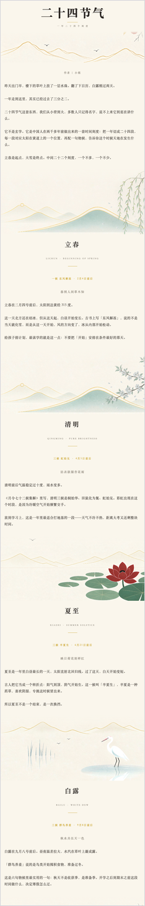
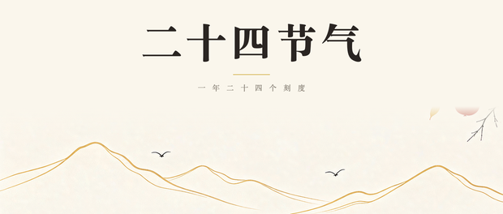
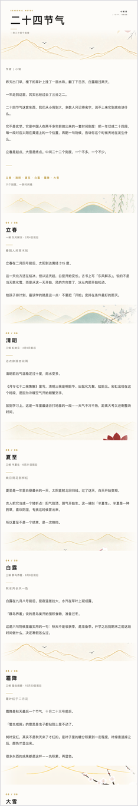
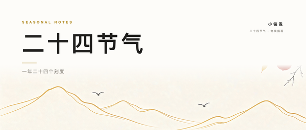
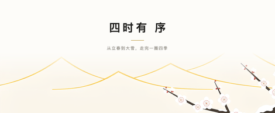
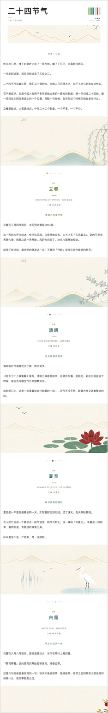
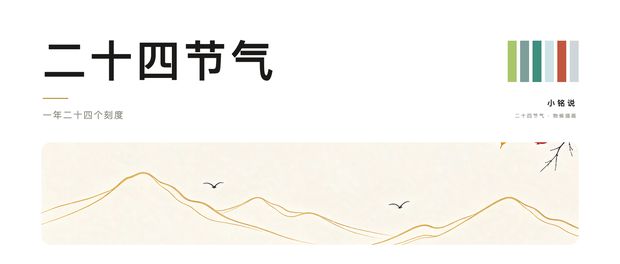
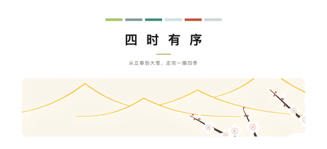

同一篇正文，三种版式。素材是那套新中式扁平插画（六张物候图），
三套都把「时间」当主线：立春 → 清明 → 夏至 → 白露 → 霜降 → 大雪。
每套都有头图、章节分隔图、结尾图三件套，规格见下方。
宣纸暖白 · 宋体 · 整幅节气段带逐章推进


底 #FAF6EC / 章头居中 / 六张 1260×580 段带 / 金线 #C9A227
打开这一套的完整样板 → （可复制版：01-节气卷/成稿-可复制.html，直接全选粘进公众号）
近白底 · 无衬线 · 一律左对齐 · 只留一道山脊线



底 #FDFCF9 / 章头左对齐 + 01·06 序号 / 1400×189 窄带 / 金线 #B9963A
打开这一套的完整样板 → （可复制版：02-留白笺/成稿-可复制.html，直接全选粘进公众号）
纯白底 · 圆角图卡 · 六色色点走出时间进度



底 #FFFFFF / 四季色板 / 圆角烧进 PNG / 金线 #B9963A
打开这一套的完整样板 → （可复制版：03-六色四季/成稿-可复制.html，直接全选粘进公众号）